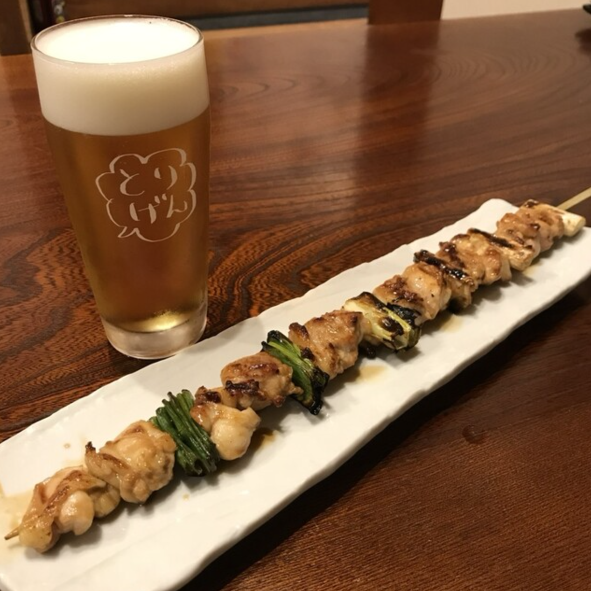
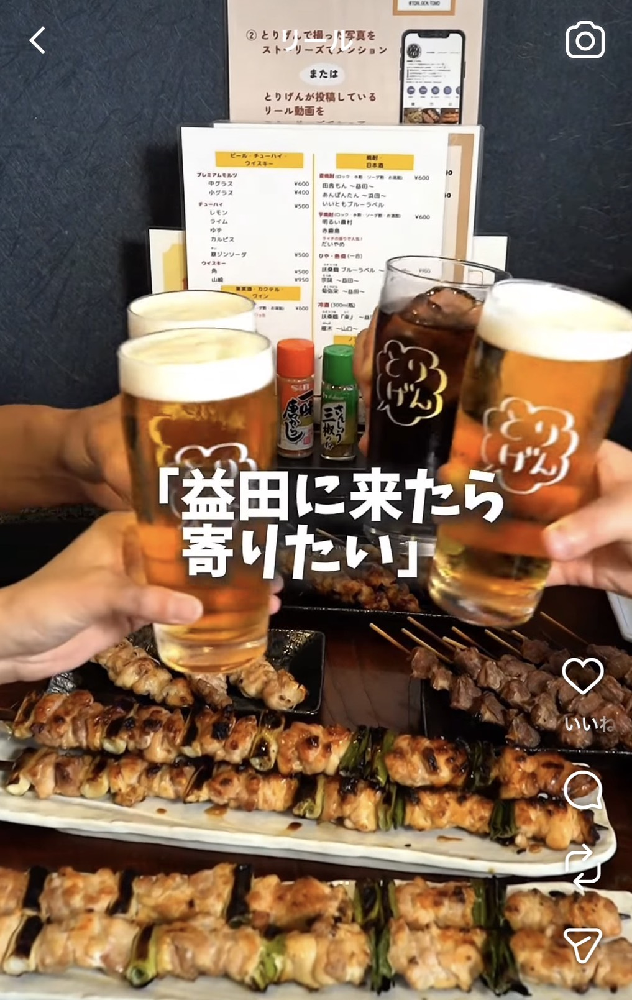
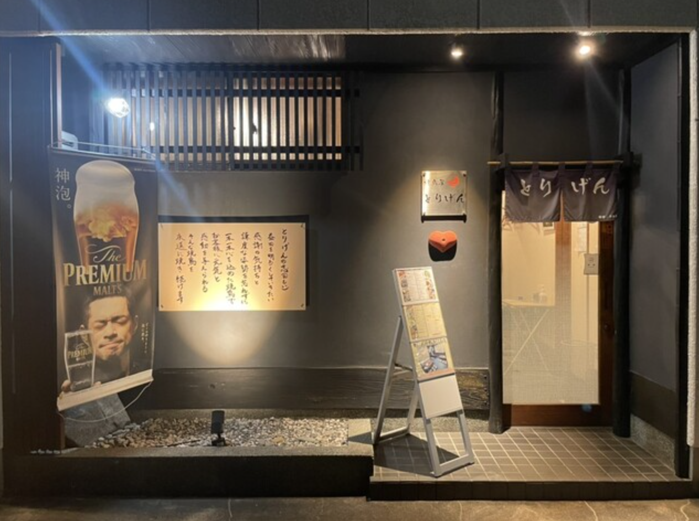
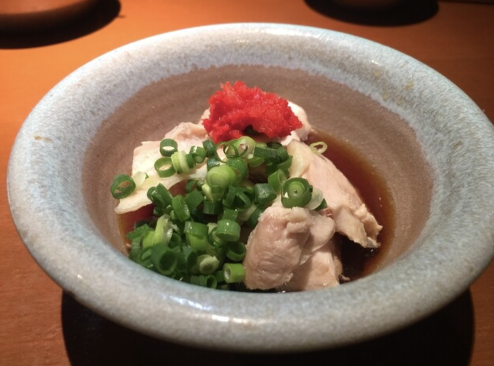
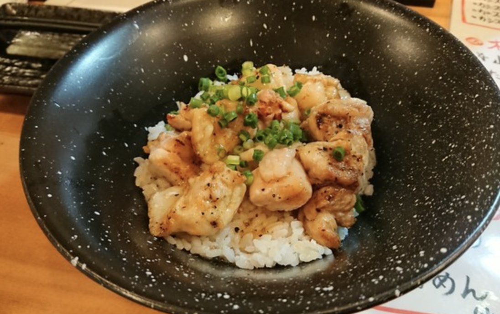

旬の食材と、こだわり抜いた地酒
店主こだわりの配合。ふっくらとジューシーで、卵黄添えも人気。
身が締まっており、噛むほどに旨味が出る希少部位。
しっとりとした仕上がり。
皮の香ばしさと肉のボリューム感が魅力。
秘伝のタレを塗り、香ばしく焼き上げます。
島根の選りすぐりの地酒（益田市・県内銘酒）をはじめ、焼鳥の味わいを引き立てるラインナップを取り揃えております。
火入れの技術： 理想的な熱効率を追求し、遠赤外線効果で肉の旨味を瞬時に閉じ込めています。
一本ずつの「手打ち」： その日に仕入れた新鮮な鶏肉を、店舗で部位ごとに最適な太さの串へ丹念に打っています。
ライブ感溢れる空間： 目の前で素材が仕上がる様子を五感で楽しめるカウンター席が人気です。

木の温もりを感じるカウンター席。目の前で焼き上がる様子を眺めながら、ゆったりとした時間をお過ごしいただけます。お一人様から、大切な方との語らいまで。


焼鳥屋 鳥げん
〒698-0024島根県益田市あけぼの東町3-5
18:00 〜 23:00 (L.O. 22:30)
※売り切れ次第終了する場合がございます
不定休 (SNSにて告知いたします)